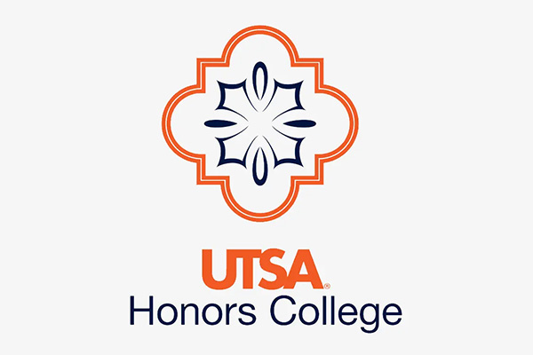
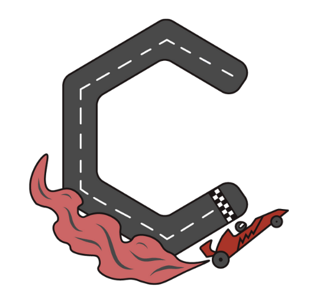
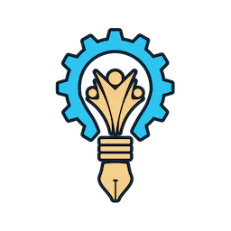

Mentoring, outreach, organizational leadership, and community engagement.

Research Mentorship
Research Advisor
Spring 2025 – Present
Mentor to high school researchers studying psychological dimensions of LLMs.
Guided students through ideation, analysis, writing, and presenting work published at IEEE ISEC 2025.
Mentorship
Research Guidance
STEM Outreach

UTSA Honors College Research Panel
Panelist
Spring 2025
Invited panelist sharing undergraduate research experiences and strategies for
pursuing research opportunities with Honors College students.
Public Speaking
Research Outreach
Leadership

CodeQuantum Hackathon
Lead Design & Media Organizer
Summer 2024 – Present
Directed design and media strategy for a hackathon empowering marginalized minorities in tech.
Promotional materials brought 150 participants and 6 sponsors. Built PR toolkit for future iterations.
Event Leadership
Media Design
Women in Tech

Rowdy Creators
Vice President & Media Director
Fall 2023 – Summer 2025
Oversaw media, design, and outreach strategy. Led campaigns that increased kickoff attendance
from 20 to ~100 students. Coordinated semester project workathons and managed social media.
Leadership
Media Strategy
Community Building
Cibolo Center for Conservation
Volunteer
Summer 2023 – Summer 2024
Contributed 90 hours supporting environmental education, visitor engagement,
and nonprofit operations at a conservation center.
Environmental Service
Community Outreach
Nonprofit Support
Tutoring & Phonics Instruction
Volunteer Instructor
Spring 2020 – Present
Completed over 300 hours tutoring young students in reading, phonics,
and foundational academic skills through individualized lesson plans.
Education
Youth Mentorship
Service